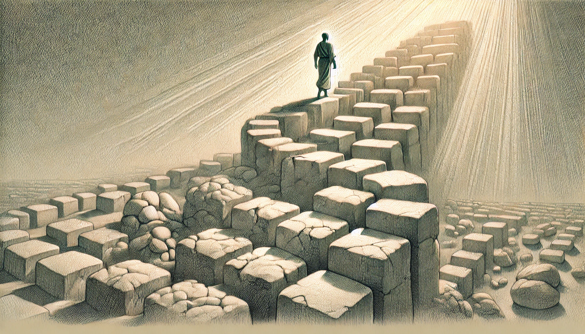

Journal 4: I am not the same as I was

My reflection on the nature of my problems.
If my problems are not evolving, perhaps I am not growing. If the same problem persists from a year ago, perhaps I am still the same person from a year ago.
Growth is not measured solely by accomplishments. Sometimes, it is best revealed in the progression of our problems — and in the progression of how we deal with them.
The concerns of a child differ from those of an adult. Elementary problems give way to College struggles. And so it continues.
Some problems are to be solved. Others must simply be lived with. We deal with them — navigate them — and in doing so, we grow.
If I face new challenges today, I celebrate. For it means I am not the same as I was.
Cheers to the changing burdens.
~ Ron